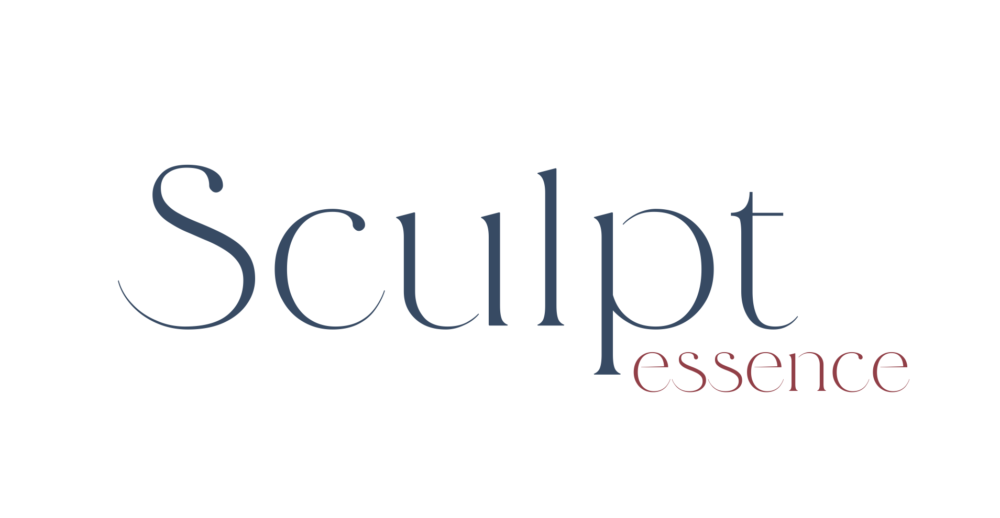

Programa de harmonização corporal de alta performance, com ciência, tecnologia avançada e planejamento médico individualizado.
Vídeo explicativo do procedimento
Abordagem Terapêutica Integrada
Programa de harmonização corporal de alta performance, desenvolvido para redefinir contornos com ciência, tecnologia avançada e planejamento médico individualizado — atuando de forma integrada na gordura localizada, na fibrose estrutural e na qualidade da pele.
{{ activeTitle }}
{{ activeDesc }}
O procedimento
Da avaliação ao refinamento do contorno.
Indicado para regiões como culote, glúteos, abdômen, braços, flancos e áreas com irregularidade de contorno.
A jornada segue avaliação estratégica, planejamento anatômico individualizado, execução combinada das tecnologias, acompanhamento estruturado e refinamento progressivo do contorno.
Acompanhamento Premium
Refinamento progressivo, acompanhado de perto.
Reavaliações programadas, monitoramento de firmeza e contorno, ajustes técnicos estratégicos e refinamento quando indicado.
O acompanhamento faz parte essencial do programa, do planejamento inicial ao resultado final.
Investimento
Planos pensados para cada etapa da jornada.
Sessão Única
R$ 25,00
Pacote
R$ 35,00
3 Sessões
R$ 55,00
4 Sessões
R$ 30,00
Semestral
R$ 15,00
Formas de pagamento
PIX, transferência bancária, dinheiro ou parcelamento em até 6x no cartão de crédito, com acréscimo da taxa de juros da máquina (cerca de 10%).
Condições
Pagamento de R$ 1.000,00 no momento do agendamento; valor restante em até 7 dias corridos antes do início do protocolo.